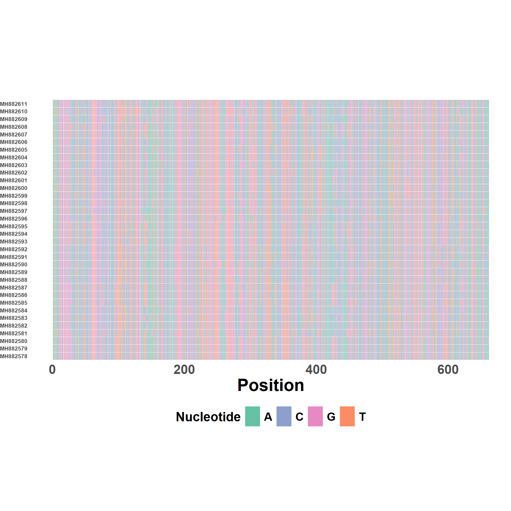
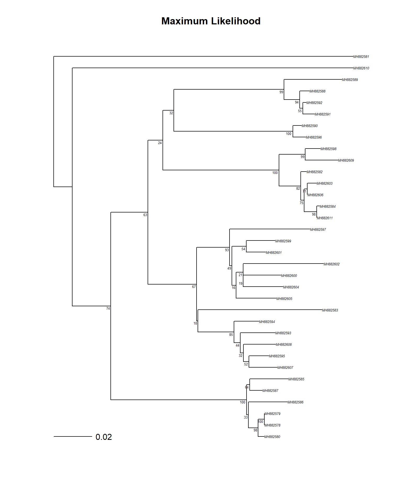

Intro R-phylogenetics tutorial using Osmondi et al 2020 data
References and External Resources
Osmondi et al 2020(2020) The role of African buffalo in the epidemiology of foot-and-mouth disease in sympatric cattle and buffalo populations in Kenya. https://doi.org/10.1111/tbed.13573
A few packages are needed. First, these help withdirectory management, visualization, and data wrangling.
Hide code
library(here) # directory managementlibrary(tidyverse) #ggplot, lubridate, and the like options(dplyr.summarise.inform =FALSE) # don't render data default summaries library(ggmap) # mapslibrary(ggspatial) # spatial plotslibrary(pals) # color palletslibrary(gt) # pretty tableslibrary(coda) # mcmc summaries/tools
Next, several genetics specific packages are recommended. The BioManager packages may take a few minutes to compile.
Hide code
library(ape) #Analyses of Phylogenetics and Evolution (APE)library(phangorn) # phylogenetic trees and networkslibrary(rentrez) # R interface to the NCBI - GenBank# these next 4 pieces of code check each package, then installs them if not already installed. if (!requireNamespace("BiocManager", quietly =TRUE)) {install.packages("BiocManager")}if (!requireNamespace("Biostrings", quietly =TRUE)) { BiocManager::install("Biostrings")}if (!requireNamespace("msa", quietly =TRUE)) { BiocManager::install("msa")}if (!requireNamespace("ggtree", quietly =TRUE)) { BiocManager::install("ggtree")}# if now installed, load the packages library(Biostrings) # sequence wranglinglibrary(msa) # Multiple Sequence Alignment (MSA) algorithms library(ggtree) # tree visualization and annotation
The Osmondi paper provided a listing of accession numbers as a supplemental. This was attached as a Word Doc, which I copy-and-pasted into osmondi_2020_supplemental.csv.
Rows: 98 Columns: 4
── Column specification ────────────────────────────────────────────────────────
Delimiter: ","
chr (4): Serotype, Accession, Strain Name, Species
ℹ Use `spec()` to retrieve the full column specification for this data.
ℹ Specify the column types or set `show_col_types = FALSE` to quiet this message.
Hide code
head(osmondi_seqs)
Serotype
Accession
Strain Name
Species
SAT1
MH882580
K29
Cattle
SAT1
MH882590
PRB3
Buffalo
SAT1
MH882596
PRB4
Buffalo
SAT1
MH882603
PRB6
Buffalo
SAT1
MH882582
PRB10
Buffalo
SAT1
MH882598
PRB5
Buffalo
Hide code
search_term <-paste(osmondi_seqs$Accession, collapse =" OR ")genbank_return <-entrez_search(db ="nucleotide",term = search_term,retmax =100# the default is 20 records, our list is 95)
Alternatively, search the database for the popset of interest and return all metadata. This is simpler, but not always available and GenBank may stop using PopSet numbers altogether next year.
Hide code
popset_id <-"1685824549"# "population set" from GenBank pagegenbank_return <-entrez_search(db ="nucleotide", term =paste0("POPSET:", popset_id), # search by popset numberretmax =100)
Check Contents
No actual sequences yet, only metadata. Even if you can easily access the sequences, the expanded retrieval process in this script is often needed to pull additional info, like collection dates, isolate names/labels, or geographic coordinates.
Hide code
genbank_return # check results
Entrez search result with 97 hits (object contains 97 IDs and no web_history object)
Search term (as translated): POPSET[All Fields] AND 1685824549[All Fields]
Hide code
class(genbank_return)
[1] "esearch" "list"
Hide code
str(genbank_return)
List of 5
$ ids : chr [1:97] "1685824741" "1685824739" "1685824737" "1685824735" ...
$ count : int 97
$ retmax : int 97
$ QueryTranslation: chr "POPSET[All Fields] AND 1685824549[All Fields]"
$ file :Classes 'XMLInternalDocument', 'XMLAbstractDocument' <externalptr>
- attr(*, "class")= chr [1:2] "esearch" "list"
Samples Table
Using the metadata for each record, the desired data is pulled one at a time, then organized as a data frame. Lot’s of character string wrangling, yuk!
Then, loop through each record and pull desired data. In this case, searching the metadata for accession numbers, collection dates, host type, and the more detailed isolate names.
Hide code
for (id in genbank_return$ids) {try({ record <-entrez_fetch(db="nucleotide", id=id, rettype="gb", retmode="text") accession <-sub("^.*?ACCESSION\\s+([^\n]+).*", "\\1", record) Collection <-ifelse(grepl("/collection_date=", record), sub("^.*?/collection_date=\"([^\"]+)\".*", "\\1", record), NA) host <-ifelse(grepl("/host=", record), sub("^.*?/host=\"([^\"]+)\".*", "\\1", record), NA) isolate <-ifelse(grepl("/isolate=", record), sub("^.*?/isolate=\"([^\"]+)\".*", "\\1", record), NA)# add to data frame seq_meta <-rbind(seq_meta, data.frame(Accession=accession,Collection=Collection,Host=host,Isolate=isolate,stringsAsFactors=FALSE)) %>%as.data.frame()# delay to prevent overwhelming the API serverSys.sleep(0.5) # this gives a 0.5 second gap }, silent =TRUE) # continue if an error}
Data Table
Examine what was retrived.
Hide code
dim(seq_meta)
[1] 97 4
Hide code
head(seq_meta)
Accession
Collection
Host
Isolate
MH882663
2016-01
Syncerus_caffer
SAT2/KEN/PRB88/2016_pro
MH882662
2016-01
Syncerus_caffer
SAT2/KEN/PRB87/2016_pro
MH882661
2016-01
Syncerus_caffer
SAT2/KEN/PRB86/2016_pro
MH882660
2016-01
Syncerus_caffer
SAT2/KEN/PRB85/2016_pro
MH882659
2016-01
Syncerus_caffer
SAT2/KEN/PRB83/2016_pro
MH882658
2016-01
Syncerus_caffer
SAT2/KEN/PRB81/2016_pro
Hide code
# using trimws due to an extra space in the numbersseq_meta$Accession <-trimws(seq_meta$Accession)# add a couple more columnsseq_meta$Serotype <-sub("/.*", "", seq_meta$Isolate)seq_meta$Animal <-sub("^.*/([^/]+)/[^/]+$", "\\1", seq_meta$Isolate)seq_meta %>%gt() %>%tab_header(title =md("Kenya Sequences Metadata")) %>%cols_width(starts_with("Accession") ~px(90),starts_with("Collection") ~px(80),starts_with("Host") ~px(100),starts_with("Isolate") ~px(180),starts_with("Serotype") ~px(80),starts_with("Animal") ~px(80),everything() ~px(95)) %>%tab_options(table.font.size ="small",row_group.font.size ="small",stub.font.size ="small",column_labels.font.size ="medium",heading.title.font.size ="large",data_row.padding =px(2),heading.title.font.weight ="bold",column_labels.font.weight ="bold") %>%opt_stylize(style =6, color ='gray')
Now, query GenBank for the actual sequences. Example here using SAT1 as an example.
Hide code
sat1_df <- seq_meta %>%filter(Serotype =="SAT1")# function to get sequencesget_sequences <-function(accessions) { sequences <-sapply(accessions, function(acc) {entrez_fetch(db ="nuccore", id = acc, rettype ="fasta") })return(sequences)}# run functionsat1_sequences <-get_sequences(sat1_df$Accession)# remove special characters sat1_sequences <-gsub("[^ATCG]", "", sat1_sequences)# save to text file - fasta format writeLines(sat1_sequences, here("assets/sat1_sequences.fasta"))
Alignment
Hide code
# ensure all is named correctlyunique_names <-make.unique(names(sat1_sequences))names(sat1_sequences) <- unique_names# convert to a DNAStringSet object, needed for the msa packagedna_sequences <-DNAStringSet(sat1_sequences)# MUSCLE alignmentalignment <-msa(dna_sequences, method ="Muscle")alignment <-as(alignment, "DNAStringSet") # save the aligned sequences to a text file writeXStringSet(alignment, filepath =here("assets/aligned_SAT1.fasta"))
View Alignment
A plot to view the alignment. These are very clean, hardly any breaks or missingness.
Hide code
plot_alignment(alignment)

Substitution Model
Read in the saved alignment. This rather than using the version already in the environment, becuase the classes are different.
Hide code
alignment <-read.dna(here("assets/aligned_SAT1.fasta"),format="fasta", as.matrix=TRUE)# convert again for modelTest (phangorn pkg)aligned_phyDat <-as.phyDat(alignment)# run the test, compare the modelsmt <-modelTest(aligned_phyDat)
# use the next to bestenv <-attr(mt, "env")best_mod <-eval(get("GTR+G(4)+I", env), env) best_mod
model: GTR+G(4)+I
loglikelihood: -3675.83
unconstrained loglikelihood: -2240.76
Proportion of invariant sites: 0.5208753
Discrete gamma model
Number of rate categories: 4
Shape parameter: 1.148496
Rate matrix:
a c g t
a 0.000000 1.4780899 10.3864230 1.332913
c 1.478090 0.0000000 0.4662525 15.398463
g 10.386423 0.4662525 0.0000000 1.000000
t 1.332913 15.3984631 1.0000000 0.000000
Base frequencies:
a c g t
0.2473969 0.3145267 0.2642101 0.1738664
Maximum Likelihood Tree
Quick tree to see if there’s any craziness happening. Also an opportunity to check out ggtree
Optimize model
This optimization process is rather specific to this algorithm; it’s OK for quick checks, but you’ll want to use other methods for publishable results.
Hide code
# optimize model parameters without fitting edgesfit1 <-optim.pml(best_mod, # best model optNni =FALSE, optBf =TRUE, optQ =TRUE, optInv =TRUE, optGamma =TRUE, optEdge =FALSE, optRate =TRUE, control =pml.control(epsilon =1e-08,maxit =10, trace =0))#Fix substitution model and fit treefit2 <-optim.pml(fit1, optNni =TRUE, optBf =FALSE,optQ =FALSE, optInv =FALSE, optGamma =FALSE, optEdge =TRUE,control =pml.control(epsilon =1e-08, maxit =10, trace =0))#Fine tunefit3 <-optim.pml(fit2, optNni =TRUE, optBf =TRUE,optQ =TRUE, optInv =TRUE, optGamma =TRUE, optEdge =TRUE, optRate =FALSE,control =pml.control(epsilon =1e-08, maxit =10, trace =0))
Bootstrap Values
Only running 100 trees as an example, although a small number, this might take a few minutes…
# get the best tree from optimizationml_tree <- fit3$tree# Or use a consensus tree# consensus_tree <- consensus(boots, p = 0.5)# phangorn specific plotsplotBS(midpoint(ml_tree), boots, type="p", cex=0.4,bs.adj =c(1.25, 1.25),bs.col ="black")add.scale.bar()title("Maximum Likelihood")

Could also extract the bootstrap values for use in other plotting tools.